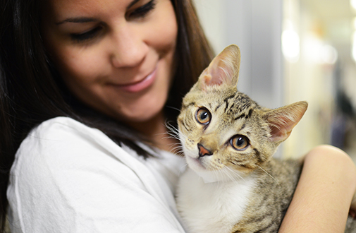

How to Take Care of Your Cat
Have you recently added a feline friend to your family? Congratulations! We know you’ll be thrilled to have your new cat in your home. Read on for useful tips for new cat parents, and for those looking to brush up on their pet care skills.

Feeding
- Cats need taurine, an amino acid, for their heart and eye health.
- Fresh and clean water is necessary at all times, and washing your cat;s water bowl on a daily is recommended.
- Treats should make up at most 10% of your cat's diet.
- Many people feed baby food to a cat or kitten who is refusing food or not feeling well. Please read labels carefully: If the baby food contains onion or garlic powder, your pet could be poisoned.
- Take your pet to your veterinarian if signs of anorexia, diarrhea, vomiting or lethargy continue for more than two days.
Scratching
Cats need to scratch! When a cat scratches, the old outer nail sheath is pulled off and the sharp, smooth claws underneath are exposed. Cutting your cat’s nails every two to three weeks will keep them relatively blunt and less likely to harm the arms of both humans and furniture. Provide your cat with a sturdy scratching post, at least three feet high. The post should also be stable enough that it won't wobble during use, and should be covered with rough material such as sisal, burlap or tree bark. Many cats also like scratching pads.
Cat Supply Checklist
- Cat food
- Food dish
- Water bowl
- Brush & comb
- Litter box and litter
- Scratching post or scratching pad
- Cat carrier and cat bed
- Safety cat collar with ID tag
Source: “General Cat Care.” ASPCA, 2015, www.aspca.org/pet-care/cat-care/general-cat-care